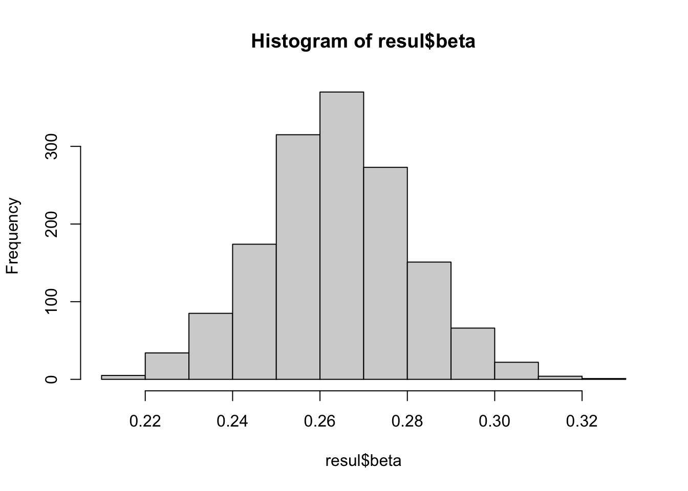
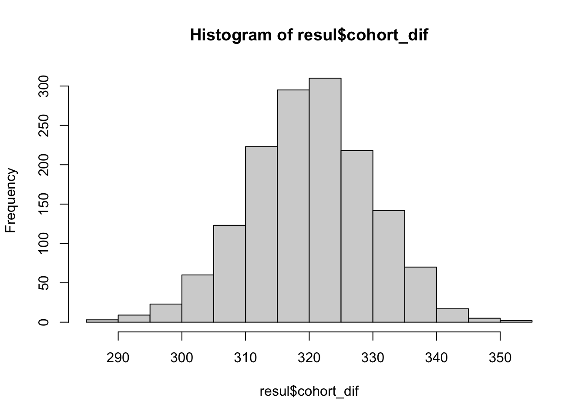

library(tidyverse)
library(haven) # importa, entre otros software, de Stata
library(sjlabelled) # manejar labels de las variables
library(openxlsx) # leer archivos de excel
library(DT) # visualizar a tablas
library(data.table) # convertir a tablas
library(highcharter) # gráficas interactivas
library(foreign)cargar_esru<- function(){
return(read_stata(
path = "Datos/ESRU-EMOVI-2017/ESRU-EMOVI-2017-Entrevistado.dta",
atomic.to.fac = TRUE,
enc = NULL,
))
}cargar_enigh<- function(docu){
return(read_stata(
path = paste("Datos/ENIGH-2016/",docu,".dta",sep=""),
atomic.to.fac = TRUE,
enc = NULL,
))
}
cargar_enigh_sav<- function(docu){
return(read_spss(
path = paste("Datos/ENIGH-2016/",docu,".sav",sep=""),
atomic.to.fac = TRUE,
enc = NULL,
))
}data_emovi2017<-cargar_esru()
data_emovi2017<-data_emovi2017%>%
mutate(mov = ifelse(p147>p148,"mejor",
ifelse(p147<p148,"peor","igual")),
id_ho = as.integer(row.names(data_emovi2017)))
data_emovi2017$mov<-set_labels(
data_emovi2017$mov,
labels = c("mejor" = "mejor",
"peor" = "peor",
"igual" = "igual"))Criterios de filtrado - pregunta p2, comparten el mimso gasto para comer: 1 ) Si 2 ) No - pregunta 5 Edades entre 25 y 45 años - pregunta p08, es el jefe del hogar: 1 ) jefe 2) cónyuge NO IMPLEMENTADO - pregunta p12, actualmente estudia, 1)Si 2)No - p26 Había un jefe de hogar en la infancia (1 padre 2 madre) - p43 y p43m Reporta educación del padre o madre priciapl - p68, Personas que trabajan, 1. Si, 2. No - p69 si trabaja pero la semana pasada no - p132 numero de personas que aportan ingreso - p133 cohort de todas las personas y todos los ingresos (1 ingreso)
Variables de selección para estimar ingreso
Estado
pregunta 5, edad
pregunta 6, sexo
Pregunta 13, nivel de escuela
p76 ocupación –SINCO3 codificación ocupación entrevistado
p133 cohort de todas las personas y todos los ingresos
# pensamos que los datos se leeen como factores cando corresponda, si se leen como enteros no debe hacerse el casting
#data_emovi2017<-datos_e
hijos <- data_emovi2017 %>%
filter(p02 == 1) %>% #compartir gasot para comer
filter(between(p05,25,40)) %>% # edad
#filter(p08 == 1) %>%
filter(p12 == 2) %>% # ya no estudia
filter(p26 == 1 | p26==2 ) %>% # sosten principal papa, mama,
filter((!is.na(p43) & p43!=98 & p26 == 1 ) |
(!is.na(p43m) & p43m!=98 & p26 == 2 )) %>% # reporta educación de pp
filter(!is.na(p13))%>% # reporta educación
filter(SINCO3 !="") %>%# reporta oficio actual
filter(p68 == 1 | p69 == 1) %>% # si trabaja
filter(p132 %in% c(1)) %>%# persona que aportan ingreso
filter(!p133 %in% c(8,9,NA) ) # reporta ingresos
# no estan los ingresos hogar aislados.
#edad_promedio_padres <- mean(hijos$p38_11, na.rm = TRUE)
#edad_promedio_padres-21
str(hijos$p02)## Factor w/ 2 levels "1","2": 1 1 1 1 1 1 1 1 1 1 ...
## - attr(*, "labels")= Named num [1:2] 1 2
## ..- attr(*, "names")= chr [1:2] "SÃ" "No"
## - attr(*, "label")= chr "p02 Personas en vivienda comparten un mismo gasto para comer"unique(hijos$p43)## [1] 11 2 6 <NA> 98 4 3 8 5 7 10 12 9 1
## Levels: 1 2 3 4 5 6 7 8 9 10 11 12 98Hacemos un cohort del 1 y el 2
var<-c("Estado","p05","p06","p13","SINCO3","p133","mov","id_ho","region")
hijos_para_sal<-hijos%>%
select(var)%>%
mutate(p133 = ifelse(p133==1,2,p133)-1)# juntamos el cohort 1 y 2
hijos_para_sal <- hijos_para_sal%>%
mutate(estrato = ifelse(p133 %in% c(1,2),1,
ifelse(p133 %in% c(3),2,
ifelse(p133 %in% c(4,5),3,4))))
#sum(hijos_para_sal$p133==1)
nrow(hijos_para_sal)## [1] 1131saveRDS(hijos_para_sal, file="Datos/hijos_emovi2017.Rda")poblacion_e16<-cargar_enigh_sav("poblacion")
trabajos_e16<-cargar_enigh_sav("trabajos")
ingresos_e16<-cargar_enigh_sav("ingresos")poblacion_e16f<- poblacion_e16%>%
#filter(asis_esc == "2")%>% # ya no asiste a la escuela
select(folioviv,foliohog,numren,sexo,edad,nivelaprob)%>%
filter(between(as.integer(edad),25,40))
# no filtramos por jefe de hogar
nrow(poblacion_e16f)## [1] 58884sum(is.na(poblacion_e16f))## [1] 0Filtrams los trabajos
trabajos_e16f<-trabajos_e16%>%
select(folioviv,foliohog,numren)#%>%
# filter(!is.na(sinco))
NROW(trabajos_e16f)## [1] 132095#NROW(trabajos)
sum(is.na(trabajos_e16f))## [1] 0familias_integrantes_e16 <- function(df,folhog,nr){
dfn <- df %>%
filter(foliohog %in% folhog)%>%
filter(numren %in% nr)
return(dfn)
}
ingresos_acu_e16 <- function(df,clavs=get_labels(ingresos_e16$clave)){
dfn <- df %>%
group_by(folioviv, foliohog, numren) %>%
filter(clave %in% clavs)%>%
summarise(
claves_a = paste(clave,collapse = ","),
ing_tri_t = sum(ing_tri),
ing_men_p = ing_tri_t/3
) %>% ungroup()
return(dfn)
}
hogares <- c("1","2","3","4","5")
personas_h <- c('01','02','03','04','05')
a<-familias_integrantes_e16(ingresos_e16,hogares,personas_h)
head(a)## folioviv foliohog numren clave mes_1 mes_2 mes_3 mes_4 mes_5 mes_6 ing_1
## 1 0100003801 1 02 P009 7500
## 2 0100003801 1 01 P001 09 08 07 06 05 04 18000
## 3 0100003801 1 02 P001 09 08 07 06 05 04 15000
## 4 0100003801 1 01 P009 6000
## 5 0100003802 1 02 P040 10 09 08 07 06 05 0
## 6 0100003802 1 02 P009 19000
## ing_2 ing_3 ing_4 ing_5 ing_6 ing_tri
## 1 NA NA NA NA NA 1844.26
## 2 18000 18000 18000 18000 18000 53114.75
## 3 15000 15000 15000 15000 15000 44262.29
## 4 NA NA NA NA NA 1475.40
## 5 0 0 0 5000 0 2459.01
## 6 NA NA NA NA NA 4672.13claves<-c("P001","P002","P003","P011","P023","P024","P054","P055","P056", "P059","P060","P061","P063","P068","P060","P070","P071","P072","P073","P074","P075","P076","P077","P078","P079","P080")
ingresos_e16a<-ingresos_acu_e16(a,claves)
ingresos_e16a## # A tibble: 104,236 x 6
## folioviv foliohog numren claves_a ing_tri_t ing_men_p
## <chr> <chr> <chr> <chr> <dbl> <dbl>
## 1 0100003801 1 01 P001 53115. 17705.
## 2 0100003801 1 02 P001 44262. 14754.
## 3 0100003802 1 01 P001 47213. 15738.
## 4 0100003802 1 02 P001 44262. 14754.
## 5 0100003803 1 01 P001 82623. 27541.
## 6 0100003804 1 01 P001 29508. 9836.
## 7 0100003804 1 02 P001 3934. 1311.
## 8 0100003805 1 01 P001 35410. 11803.
## 9 0100010401 1 03 P063,P001 8560. 2853.
## 10 0100010401 1 04 P001 20837. 6946.
## # … with 104,226 more rowsenigh_16<- full_join(poblacion_e16f,trabajos_e16f)%>%
drop_na()
#enigh<-full_join(enigh,concentrado)%>%
# drop_na()
nrow(enigh_16)## [1] 63108sum(is.na(enigh_16))## [1] 0Pasamos las etiqeuteas de educación de emovi a
hijos_emovi <- readRDS(file="Datos/hijos_emovi2017.Rda")
hijos_emovi<- hijos_emovi %>%
mutate(p13_m = ifelse(p13 %in% c(1),"1",
ifelse( p13 == 2,"2",
ifelse(p13 %in% c(3,4),"3",
ifelse( p13 %in% c(5,6),"4",
ifelse(p13 %in% c(7,8),"6",
ifelse(p13 %in% c(9,10),"5",
ifelse(p13==11,"7",
ifelse(p13==12,"8","0")))))))))
unique(hijos_emovi$p13_m)## [1] "4" "3" "7" "2" "5" "6" "8" "0"enigh_16<-enigh_16%>%
mutate(nivelaprob=ifelse(nivelaprob=="9","8",nivelaprob))
enigh_16f<-enigh_16%>%
filter(nivelaprob %in% unique(hijos_emovi$p13_m))
nrow(enigh_16f)## [1] 63057busca<-function(i){
return(enigh_16f%>%
filter(
as.integer(substr(folioviv,1,2))==hijos_emovi[i,]$Estado &
sexo == hijos_emovi[i,]$p06 &
edad == hijos_emovi[i,]$p05 &
#sinco == hijos_emovi[i,]$SINCO3 &
nivelaprob == hijos_emovi[i,]$p13_m)%>%
select(folioviv,foliohog))
}
a<-lapply(1:nrow(hijos_emovi), busca)
contador<-0
for(i in 1:nrow(hijos_emovi))
{if(nrow(a[[i]])>0)
contador<-contador +1
}
contador## [1] 1077saveRDS(a, file="Datos/folhijos_enigh16_emovi.Rda")Del total, 1077 personas tienen gemelos
# etiquetamos para no perder la numeracion respecto a los hijos originales
folhijos_e16_emovi <- readRDS(file="Datos/folhijos_enigh16_emovi.Rda")
names(folhijos_e16_emovi) <- as.character(1:nrow(hijos_emovi))
length(folhijos_e16_emovi)## [1] 1131L <- c()
for(i in 1:length(folhijos_e16_emovi)){
if(!(nrow(folhijos_e16_emovi[[i]])>0)){
L<-c(L,i)}
}
# Solo hijos que se les pudo encontrar en enigh-2016 1077/1131
folhijos_e16_emovif<-folhijos_e16_emovi[-L]
length(folhijos_e16_emovif)## [1] 1077#names(folhijos_emovif)
#names(folhijos_emovi)unicos_folios<-function(i){
folhijos_e16_emovif[[i]]%>%
distinct()
}
# filtramos unicos folios por diferentes trabajos de la misma persona
a<-lapply(1:length(folhijos_e16_emovif), unicos_folios)
names(a)<-names(folhijos_e16_emovif)
length(a)## [1] 1077folhijos_e16_emovif<-amyMenuItems <- c("downloadPNG", "downloadJPEG", "downloadPDF", 'downloadSVG', 'printChart')
hijos_emovi%>%
slice(as.integer(names(folhijos_e16_emovif)))%>%
select(p05)%>%
count(p05)%>%
hchart('column',
hcaes( y = 'n'))%>%
hc_add_theme(hc_theme_ffx())%>%
hc_title(
text = ""
) %>%
#hc_subtitle(text = "Las edades están agrupadas en intervalos
# de 10 años (da clic sobre F o M)") %>%
# hc_credits(
# enabled = TRUE, text = "Source: SSS",
# style = list(fontSize = "12px"))%>%
hc_yAxis(title = list(text = "Número de participantes"))%>%
hc_xAxis(title=list(text="Número de personas"),
categories = as.character(25:40)) %>%
hc_exporting(enabled = TRUE,
filename = "datos",
buttons = list(contextButton = list(menuItems = myMenuItems)))hijos_emovi%>%
slice(as.integer(names(folhijos_e16_emovif)))%>%
count(Estado)%>%
hchart('column',
hcaes( y = 'n'))%>%
hc_add_theme(hc_theme_ffx())%>%
hc_title(
text = ""
) %>%
#hc_subtitle(text = "Las edades están agrupadas en intervalos
# de 10 años (da clic sobre F o M)") %>%
# hc_credits(
# enabled = TRUE, text = "Source: SSS",
# style = list(fontSize = "12px"))%>%
hc_yAxis(title = list(text = "Número de participantes"))%>%
hc_xAxis(title=list(text="Número de personas"),
categories = get_labels(hijos_emovi$Estado)) %>%
hc_exporting(enabled = TRUE,
filename = "datos",
buttons = list(contextButton = list(menuItems = myMenuItems)))ingreso_hijo_e16_emovi<-function(i){
ingresos_e16a%>%
filter(folioviv %in% folhijos_e16_emovif[[i]]$folioviv &
foliohog %in% folhijos_e16_emovif[[i]]$foliohog)%>%summarise(
id_hijo = names(folhijos_e16_emovif[i]),
id_ho = hijos_emovi[as.integer(names(folhijos_e16_emovif[i])),"id_ho"],
mov= hijos_emovi[as.integer(names(folhijos_e16_emovif[i])),"mov"],
regionh = hijos_emovi[as.integer(names(folhijos_e16_emovif[i])),"region"],
edad = hijos_emovi[as.integer(names(folhijos_e16_emovif[i])),"p05"],
ing_men_p_h =list(ing_men_p),
cohort = hijos_emovi[as.integer(names(folhijos_e16_emovif[i])),"p133"],
estrato = hijos_emovi[as.integer(names(folhijos_e16_emovif[i])),"estrato"],
estado = hijos_emovi[as.integer(names(folhijos_e16_emovif[i])),"Estado"],
sexo = hijos_emovi[as.integer(names(folhijos_e16_emovif[i])),"p06"]
)
}
#273,332 son vacios
# ingreso hijo pero ualgunos no podrian estar por no tener registro de salario
a<-lapply(1:length(folhijos_e16_emovif), ingreso_hijo_e16_emovi)
ingreso_hijog_e16_emovi<-a
length(ingreso_hijog_e16_emovi)## [1] 1077ingreso_hijog_e16_emovi[[332]]## # A tibble: 1 x 10
## id_hijo id_ho mov regionh edad ing_men_p_h cohort estrato estado sexo
## <chr> <int> <chr> <fct> <dbl> <list> <dbl> <dbl> <fct> <fct>
## 1 355 5759 mejor 4 27 <dbl [0]> 1 1 9 2x<-ingreso_hijog_e16_emovi[[332]]$ing_men_p_h[1]
sum(ingreso_hijog_e16_emovi[[332]]$ing_men_p_h[[1]],na.rm = TRUE)## [1] 0L <- c()
for(i in 1:length(ingreso_hijog_e16_emovi)){
if(sum(ingreso_hijog_e16_emovi[[i]]$ing_men_p_h[[1]],na.rm = TRUE)==0){
L<-c(L,i)}
}
length(L)## [1] 2ingreso_hijog_e16_emovi<-ingreso_hijog_e16_emovi[-L]
length(ingreso_hijog_e16_emovi)## [1] 1075ingreso_hijog_e16_emovi[1]## [[1]]
## # A tibble: 1 x 10
## id_hijo id_ho mov regionh edad ing_men_p_h cohort estrato estado sexo
## <chr> <int> <chr> <fct> <dbl> <list> <dbl> <dbl> <fct> <fct>
## 1 1 7 peor 3 25 <dbl [24]> 3 2 1 1ingreso_hijog_e16_emovi[2]## [[1]]
## # A tibble: 1 x 10
## id_hijo id_ho mov regionh edad ing_men_p_h cohort estrato estado sexo
## <chr> <int> <chr> <fct> <dbl> <list> <dbl> <dbl> <fct> <fct>
## 1 2 34 mejor 3 35 <dbl [43]> 1 1 1 1ingreso_hijog_e16_emovif<-bind_rows(ingreso_hijog_e16_emovi[1:length(ingreso_hijog_e16_emovi)])
nrow(ingreso_hijog_e16_emovif)## [1] 1075saveRDS(ingreso_hijog_e16_emovif, file="Datos/ingreso_hij_f_emovi.Rda")hijos_emovi_hp <- readRDS(file="Datos/ingreso_hij_f_emovi.Rda")
nrow(hijos_emovi_hp)## [1] 1075hijos_emovi_hp ## # A tibble: 1,075 x 10
## id_hijo id_ho mov regionh edad ing_men_p_h cohort estrato estado sexo
## <chr> <int> <chr> <fct> <dbl> <list> <dbl> <dbl> <fct> <fct>
## 1 1 7 peor 3 25 <dbl [24]> 3 2 1 1
## 2 2 34 mejor 3 35 <dbl [43]> 1 1 1 1
## 3 3 66 peor 3 40 <dbl [9]> 2 1 1 2
## 4 4 81 peor 3 28 <dbl [18]> 3 2 1 2
## 5 5 97 mejor 3 37 <dbl [24]> 1 1 1 2
## 6 6 104 mejor 3 29 <dbl [30]> 2 1 1 2
## 7 7 115 mejor 3 35 <dbl [14]> 2 1 1 2
## 8 8 122 igual 3 30 <dbl [74]> 1 1 1 1
## 9 9 152 igual 3 40 <dbl [9]> 3 2 1 1
## 10 10 160 mejor 3 36 <dbl [16]> 3 2 1 1
## # … with 1,065 more rows# p05 edad act
# p06 sexo act
# p13 educ hijo
# SINCO3, ocupación hijo
# p23 en qeu estado vivia a los 14
# p26 principal sosten ecómico
# p38_11 edad padre 2016
# p38m_11 edad madre 2016
# p43 nivel educativo padre
#p43m nivel educativo madre
# cmo1_2 ocupacion del padre
# cmo2_2 ocupacion de la madre
varp<-c("Estado","p05","p06","p13","SINCO3","p23","p26","p38_11","p38m_11","p43","p44",
"p43m","p44m","cmo1_2","cmo2_2","mov",
"region","p133")
padres_h<-data_emovi2017%>%
filter(p02 == 1) %>% #compartir gasot para comer
filter(between(p05,25,40)) %>% # edad
#filter(p08 == 1) %>%
filter(p12 == 2) %>%# ya no estudia
filter(p26 == 1 | p26==2 ) %>% # sosten principal papa, mama,
filter((!is.na(p43) & p43!=98 & p26 == 1 )|
(!is.na(p43m) & p43m!=98 & p26 == 2 )) %>% # reporta educación de pp
filter(!is.na(p13))%>% # reporta educación
filter(SINCO3 !="") %>%# reporta oficio actual
filter(p68 == 1 | p69 == 1) %>% # si trabaja
filter(p132 %in% c(1)) %>%# persona que aportan ingreso
filter(!p133 %in% c(8,9,NA) )%>%
select(varp)%>%
slice(as.integer(unlist(hijos_emovi_hp%>%select(id_hijo))))%>%
mutate(
pp_id_hijo = hijos_emovi_hp%>%pull(id_hijo),
ing_h = hijos_emovi_hp%>%pull(ing_men_p_h),
cohort = ifelse(p133==1,2,p133)-1
)%>%
rename(
edad_h = p05,
sexo_h = p06,
edu_h = p13,
ocu_h = SINCO3,
pp_estado = p23,
pp = p26,
p_edad_2016= p38_11,
m_edad_2016 = p38m_11,
p_edu = p43,
p_edug = p44,
m_edu = p43m,
m_edug = p44m,
p_ocu = cmo1_2,
m_ocu = cmo2_2
)%>%
mutate(
p_edu = as.integer(p_edu),
m_edu = as.integer(m_edu)
)
# las ocupaciones no encontradas las sustituimos por un NA
padres_h<-padres_h%>%
mutate(p_ocu = ifelse(p_ocu==".",NA,p_ocu),
m_ocu = ifelse(m_ocu==".",NA,m_ocu))
unique(padres_h$p_ocu)## [1] "21" "52" "61" NA "71" "55" "12" "41" "53" "81" "11" "51" "62" "14" "82"
## [16] "83" "54" "99" "13" "72"unique(padres_h$m_ocu)## [1] "71" NA "82" "13" "55" "41" "62" "72" "52" "81" "51" "11" "54" "12" "83"
## [16] "61" "14" "53"head(padres_h)## Estado edad_h sexo_h edu_h ocu_h pp_estado pp p_edad_2016 m_edad_2016 p_edu
## 1 1 25 1 6 2815 1 1 51 53 11
## 2 1 35 1 4 7121 1 1 72 73 2
## 3 1 40 2 6 3211 1 1 71 68 6
## 4 1 28 2 11 4111 1 2 NA 65 NA
## 5 1 37 2 2 5111 1 1 82 72 2
## 6 1 29 2 5 4111 1 2 53 48 13
## p_edug m_edu m_edug p_ocu m_ocu mov region p133 pp_id_hijo
## 1 5 11 5 21 71 peor 3 4 1
## 2 3 NA NA 52 <NA> mejor 3 1 2
## 3 3 6 3 61 <NA> peor 3 3 3
## 4 NA 2 6 <NA> 82 peor 3 4 4
## 5 4 2 2 71 <NA> mejor 3 2 5
## 6 NA 11 4 55 13 mejor 3 3 6
## ing_h
## 1 14673.9100, 4891.3033, 113.3133, 978.2600, 1856.3533, 196.7200, 2360.6533, 12652.1700, 1858.6933, 3391.3033, 7630.4333, 2119.5633, 983.6033, 1967.2100, 2754.0967, 3878.4500, 12082.8700, 6725.9633, 1723.7567, 3815.2167, 847.8233, 5086.9533, 1834.2367, 1695.6500
## 2 4309.390000, 3662.983333, 521.736667, 6281.963333, 9606.553333, 3.276667, 8217.390000, 4695.650000, 3913.043333, 7081.966667, 1515.080000, 5901.636667, 983.603333, 590.163333, 7499.996667, 5409.833333, 3278.686667, 3319.670000, 8902.173333, 7394.016667, 7826.086667, 5478.260000, 5673.910000, 1100.543333, 10628.800000, 2331.520000, 3977.900000, 655.736667, 1573.770000, 311.473333, 6782.606667, 6913.043333, 5673.910000, 3505.433333, 2840.216667, 423.910000, 5901.636667, 5478.260000, 78.260000, 3281.086667, 2724.453333, 782.606667, 2282.606667
## 3 27540.983, 1544.260, 2360.653, 4327.863, 4309.390, 7624.307, 2469.610, 6464.087, 5171.270
## 4 6065.2167, 7826.0867, 5869.5633, 11739.1300, 10434.7800, 19889.5000, 8552.4833, 2386.7400, 326.0867, 9836.0633, 8852.4567, 7868.8500, 14754.0967, 16721.3100, 14754.0967, 4077.3467, 828.7267, 3934.4233
## 5 5099.99667, 4820.86333, 3815.21667, 2739.13000, 3717.39000, 11508.19333, 983.60333, 590.16333, 6358.69333, 4695.65000, 269.01667, 4304.34667, 1304.34667, 2543.47667, 717.39000, 4721.31000, 5311.47333, 8524.59000, 3147.54000, 819.67000, 4010.86667, 94.56333, 180.32333, 4721.31000
## 6 1108.6933, 5086.9533, 4695.6500, 1010.8667, 48.9100, 5918.4733, 12717.3900, 19889.5000, 8552.4833, 2386.7400, 7032.7833, 5016.3933, 3854.0967, 4548.9100, 6097.8233, 5086.9533, 5543.4767, 8573.7667, 786.8833, 6762.4300, 9149.1700, 6393.4400, 3540.9833, 5311.4733, 6639.3433, 180.3267, 688.5233, 1513.1133, 5171.2700, 11820.6467
## cohort
## 1 3
## 2 1
## 3 2
## 4 3
## 5 1
## 6 2filtro_pp_c<-function(df_1,general = 0)
{
#recibe un hijo de un dataframe, para polimorfismo
# general = 0y regresa un data frame con los datos
# ordenados del hijo
if(df_1["pp"]==1)
{
dfn <- df_1%>%
filter(pp==1)%>%
select(starts_with(c("pp","p_")),
ing_h,edu_h,ocu_h,edad_h,p_edad_2016,
region,cohort)%>%
mutate(pp_edad2016 = p_edad_2016)%>%
rename(
id_hijo = pp_id_hijo,
pp_sexo = pp,
pp_edad = p_edad_2016,
pp_educ = p_edu,
pp_educg = p_edug,
pp_ocup = p_ocu
)%>%
mutate(pp_edad = pp_edad + (14-edad_h))
}
if(df_1["pp"]==2)
{
dfn<-df_1%>%
filter(pp==2)%>%
select(starts_with(c("pp","m_")),ing_h,edu_h,
ocu_h,edad_h,m_edad_2016,
region,cohort)%>%
mutate(pp_edad2016 = m_edad_2016)%>%
rename(
id_hijo = pp_id_hijo,
pp_sexo = pp,
pp_edad = m_edad_2016,
pp_educ = m_edu,
pp_educg = m_edug,
pp_ocup = m_ocu
)%>%
mutate(pp_edad = pp_edad + (14-edad_h))
}
if(is.na(dfn$pp_edad) & general){
return("ND")
}
return(dfn)
}
#comporbamos qeu funcione bien
filtro_pp_c(padres_h[1,])## pp_estado pp_sexo id_hijo pp_edad pp_educ pp_educg pp_ocup
## 1 1 1 1 40 11 5 21
## ing_h
## 1 14673.9100, 4891.3033, 113.3133, 978.2600, 1856.3533, 196.7200, 2360.6533, 12652.1700, 1858.6933, 3391.3033, 7630.4333, 2119.5633, 983.6033, 1967.2100, 2754.0967, 3878.4500, 12082.8700, 6725.9633, 1723.7567, 3815.2167, 847.8233, 5086.9533, 1834.2367, 1695.6500
## edu_h ocu_h edad_h region cohort pp_edad2016
## 1 6 2815 25 3 3 51acomoda_df_c<-function(df){
#damos un df de una edad, y
# nos regresa un data frame acomodado
aux<-function(i){
return(df[i,])
}
a<-lapply(1:nrow(df),aux)
L<-lapply(a,filtro_pp_c)
dfn <-bind_rows(L[1:length(L)])
return(dfn)
}
dfh<-acomoda_df_c(padres_h)
pro_edad_c <- function(df){
#le damos el df y nos regresa el promedio de la edade los padres
df%>%summarise(
promedi_edad_padres = mean(pp_edad2016,na.rm=TRUE))
}
edades_pro<- pro_edad_c(dfh)
edades_pro## promedi_edad_padres
## 1 60.12035#edades de padres faltantes
sum(is.na(dfh$pp_edad2016))## [1] 53#
head(dfh)## pp_estado pp_sexo id_hijo pp_edad pp_educ pp_educg pp_ocup
## 1 1 1 1 40 11 5 21
## 2 1 1 2 51 2 3 52
## 3 1 1 3 45 6 3 61
## 4 1 2 4 51 2 6 82
## 5 1 1 5 59 2 4 71
## 6 1 2 6 33 11 4 13
## ing_h
## 1 14673.9100, 4891.3033, 113.3133, 978.2600, 1856.3533, 196.7200, 2360.6533, 12652.1700, 1858.6933, 3391.3033, 7630.4333, 2119.5633, 983.6033, 1967.2100, 2754.0967, 3878.4500, 12082.8700, 6725.9633, 1723.7567, 3815.2167, 847.8233, 5086.9533, 1834.2367, 1695.6500
## 2 4309.390000, 3662.983333, 521.736667, 6281.963333, 9606.553333, 3.276667, 8217.390000, 4695.650000, 3913.043333, 7081.966667, 1515.080000, 5901.636667, 983.603333, 590.163333, 7499.996667, 5409.833333, 3278.686667, 3319.670000, 8902.173333, 7394.016667, 7826.086667, 5478.260000, 5673.910000, 1100.543333, 10628.800000, 2331.520000, 3977.900000, 655.736667, 1573.770000, 311.473333, 6782.606667, 6913.043333, 5673.910000, 3505.433333, 2840.216667, 423.910000, 5901.636667, 5478.260000, 78.260000, 3281.086667, 2724.453333, 782.606667, 2282.606667
## 3 27540.983, 1544.260, 2360.653, 4327.863, 4309.390, 7624.307, 2469.610, 6464.087, 5171.270
## 4 6065.2167, 7826.0867, 5869.5633, 11739.1300, 10434.7800, 19889.5000, 8552.4833, 2386.7400, 326.0867, 9836.0633, 8852.4567, 7868.8500, 14754.0967, 16721.3100, 14754.0967, 4077.3467, 828.7267, 3934.4233
## 5 5099.99667, 4820.86333, 3815.21667, 2739.13000, 3717.39000, 11508.19333, 983.60333, 590.16333, 6358.69333, 4695.65000, 269.01667, 4304.34667, 1304.34667, 2543.47667, 717.39000, 4721.31000, 5311.47333, 8524.59000, 3147.54000, 819.67000, 4010.86667, 94.56333, 180.32333, 4721.31000
## 6 1108.6933, 5086.9533, 4695.6500, 1010.8667, 48.9100, 5918.4733, 12717.3900, 19889.5000, 8552.4833, 2386.7400, 7032.7833, 5016.3933, 3854.0967, 4548.9100, 6097.8233, 5086.9533, 5543.4767, 8573.7667, 786.8833, 6762.4300, 9149.1700, 6393.4400, 3540.9833, 5311.4733, 6639.3433, 180.3267, 688.5233, 1513.1133, 5171.2700, 11820.6467
## edu_h ocu_h edad_h region cohort pp_edad2016
## 1 6 2815 25 3 3 51
## 2 4 7121 35 3 1 72
## 3 6 3211 40 3 2 71
## 4 11 4111 28 3 3 65
## 5 2 5111 37 3 1 82
## 6 5 4111 29 3 2 48# 2016-21dfh_c<- dfh%>%
mutate(
pp_educ_a = ifelse(pp_educ==1,1, #sin instruccion(1)
ifelse(pp_educ==2,1+pp_educg,
ifelse(pp_educ %in% c(3,4),7+pp_educg,
ifelse(pp_educ %in% c(5,6,7,8,9),10+pp_educg,
ifelse(pp_educ %in% c(10,11),13+pp_educg,17+pp_educg)))))
)
unique(dfh_c$pp_educ_a)## [1] 18 4 13 7 5 17 12 6 10 3 9 16 19 2 20 14 15 1 11 8dfh_c<-dfh_c%>%
mutate(
pp_educ_ac = ifelse(pp_educ_a %in% 0:5,"C1",
ifelse(pp_educ_a %in% 6:10 ,"C2",
ifelse(pp_educ_a %in% 11:12,"C3",
ifelse(pp_educ_a %in% 13:14,"C4","C5"))))
)Seleccionamos de la ENIGH 1997, no hay entonces 1998
poblacion<-read.dbf(
file="Datos/ENIGH-Historica/1998/POBLA98.dbf"
)
poblacion_e98<-poblacion%>%
filter(
parentesco == "01",
between(edad,30,50),
!is.na(ed_formal),
!is.na(ed_tecnica),
!is.na(ocupacion),
n_empleos==1, # el entrevistado solo proporciona una ocupación
)%>%
select(
folio,
num_ren,
edad,
ed_formal,
ed_tecnica,
ocupacion
)%>%
mutate(
ed_formal = as.integer(as.character(ed_formal)),
ed_tecnica= as.integer(as.character(ed_tecnica)),
estado = substr(folio,5,6)
)
#unique(pobla_enigh1998$ed_formal)
#pobla_enigh1998$ed_formal
nrow(poblacion_e98)## [1] 4173head(poblacion_e98$ed_formal)## [1] 3 8 13 10 15 11str(poblacion_e98$ed_formal)#caracter 2 espacios## int [1:4173] 3 8 13 10 15 11 8 8 4 14 ...unique(poblacion_e98$ed_formal)## [1] 3 8 13 10 15 11 4 14 7 1 5 12 6 16 9 2#pobla_enigh1998$ed_formal=="03"
head(poblacion_e98$ed_tecnica)## [1] 1 1 8 1 1 1str(poblacion_e98$ed_tecnica)#caracter 1 espacio## int [1:4173] 1 1 8 1 1 1 1 1 1 1 ...unique(poblacion_e98$ed_tecnica)## [1] 1 8 9 5 7 6 3 4 2#pobla_enigh1998%>%count(n_empleos), se exploro para quitar una ocupacion
names(poblacion)## [1] "folio" "num_ren" "parentesco" "sexo" "edad"
## [6] "per_ing" "leer_esc" "asis_esc_f" "asis_esc_t" "tipo_esc"
## [11] "ed_formal" "debe_mat" "grado_debe" "ed_tecnica" "beca"
## [16] "prop_beca" "como_beca" "edo_civil" "trabajo" "no_trabajo"
## [21] "n_empleos" "emp_dpais" "posicion" "ocupacion" "rama"
## [26] "nom_empr" "numper" "hrs_sem" "dia_pago" "hrs_extra"
## [31] "capacita" "antigue" "contrato1" "sindicato1" "prestacio1"
## [36] "emp_dpais2" "posici_sec" "ocup_sec" "rama_sec" "nom_empr2"
## [41] "num_per2" "hrs_sec" "dia_pago2" "hrs_extra2" "capacita2"
## [46] "antigue2" "contrato2" "sindicato2" "tot_hrs" "prestacio2"
## [51] "otrotrab"str(poblacion$per_ing)## Factor w/ 3 levels "0","1","2": 2 3 2 2 2 2 2 3 3 2 ...# hacemos la codificación de ENIGH2018 a ESRU
#1 Preescolar o kínder
# 2 Primaria
# 3 Secundaria técnica
# 4 Secundaria general
# 5 Preparatoria técnica
# 6 Preparatoria general
# 7 Técnica o comercial con secundaria
# 8 Técnica o comercial con preparatoria
# 9 Normal básica (con primaria o secundari
# 10 Normal de licenciatura
# 11 Profesional (licenciatura o ingeniería)
# 12 Postgrado (maestría o doctorado)
#_____________________________________________________
# 98 NS, no aplica porque pedimos la edución del pp como instrumento
# vemso las combinaciones de educación para codificar
comb<-poblacion_e98%>%
mutate( combi = paste(as.character(ed_formal),as.character(ed_tecnica)))%>%
select(ed_formal,ed_tecnica,combi)
sort(unique(comb$combi))## [1] "1 1" "10 1" "10 2" "10 4" "10 5" "11 1" "11 3" "11 4" "11 5" "11 6"
## [11] "11 7" "12 1" "12 3" "12 5" "12 6" "12 7" "13 1" "13 5" "13 6" "13 7"
## [21] "13 8" "13 9" "14 1" "14 3" "14 5" "14 6" "14 7" "14 9" "15 1" "15 3"
## [31] "15 4" "15 5" "15 6" "15 7" "15 9" "16 1" "16 5" "16 7" "16 9" "2 1"
## [41] "3 1" "3 2" "4 1" "5 1" "6 1" "7 1" "7 2" "8 1" "8 2" "8 3"
## [51] "8 4" "8 5" "9 1" "9 4" "9 5"# [1] "01 1" "02 1" "03 1" "03 2" "04 1" "05 1" "06 1" "07 1" "07 2" "08 1"
# [11] "08 2" "08 3" "08 4" "08 5" "09 1" "09 4" "09 5" "10 1" "10 2" "10 4"
# [21] "10 5" "11 1" "11 3" "11 4" "11 5" "11 6" "11 7" "12 1" "12 3" "12 5"
# [31] "12 6" "12 7" "13 1" "13 5" "13 6" "13 7" "13 8" "13 9" "14 1" "14 3"
# [41] "14 5" "14 6" "14 7" "14 9" "15 1" "15 3" "15 4" "15 5" "15 6" "15 7"
# [51] "15 9" "16 1" "16 5" "16 7" "16 9"
# "16 1" "16 5" "16 7" "16 9"
#codificamos a a años de educación
poblacion_e98c<-poblacion_e98%>%
mutate(
edu_a = ifelse(ed_formal==1 & ed_tecnica==1,0, #sin instruccion(1)
ifelse((ed_formal %in% c(2,3,4,5,6,7,8,9,10,11,12,13))
& (ed_tecnica %in% c(1,2)),ed_formal-1,
ifelse(ed_formal==8 & (ed_tecnica %in% c(3,4,5)),9,
ifelse(ed_formal==9 & (ed_tecnica %in% c(4,5)),10,
ifelse(ed_formal==10 & (ed_tecnica %in% c(2,4,5)),11,
ifelse(ed_formal==11 & (ed_tecnica %in% c(3,4,5,5,7)),12,
ifelse((ed_formal %in%c(12)) & (ed_tecnica %in% c(3,5,6,7)),12,
ifelse(ed_formal==13 & (ed_tecnica %in% c(5,6,7,8,9)),13,
ifelse(ed_formal==14 & (ed_tecnica %in% c(1,3,5,6,7,9)),14,
ifelse(ed_formal==15 & (ed_tecnica %in% c(1,3,4,5,6,7,9)),17,19))))))))))
)
unique(poblacion_e98c$edu_a)## [1] 2 7 13 9 17 10 3 14 6 0 4 11 12 5 19 8 1#codificamos a coghort de educación
poblacion_e98c<-poblacion_e98c%>%
mutate(
edu_ac = ifelse(edu_a %in% 0:5,"C1",
ifelse(edu_a %in% 6:10 ,"C2",
ifelse(edu_a %in% 11:12,"C3",
ifelse(edu_a %in% 13:14,"C4","C5"))))
)
unique(poblacion_e98c$edu_ac )## [1] "C1" "C2" "C4" "C5" "C3"poblacion_e98c<-poblacion_e98c%>%
mutate(
region = ifelse(estado %in% c("02","26","08","05","19","28"),1,
ifelse(estado %in% c("12","20","07","30","27","04","31","23"),5,0))
)ingresos<-read.dbf(
file="Datos/ENIGH-Historica/1998/ingresos.dbf"
)
familias_integrantes <- function(df,nr){
dfn <- df %>%
filter(NUM_REN %in% nr)
return(dfn)
}
ingresos_acu <- function(df,clavs){
dfn <- df %>%
group_by(FOLIO, NUM_REN) %>%
filter(CLAVE %in% clavs)%>%
summarise(
claves_a = paste(CLAVE,collapse = ","),
ing_tri_t = sum(ING_TRI),
ing_men_p = ing_tri_t/3,
ling_men_p = log(ing_men_p)
) %>% ungroup()
return(dfn)
}
#hogares <- c("1","2","3","4","5")
personas_h <- c('01')
a<-familias_integrantes(ingresos,personas_h)
head(a)## FOLIO NUM_REN EMPLEO MESES CLAVE ING_1 ING_TRI ING_2 ING_3 ING_4
## 1 19980110010 01 1 070605040302 P001 1640 5060 1640 1640 1600
## 2 19980110030 01 1 070605040302 P012 8500 25500 9000 8000 9000
## 3 19980110040 01 1 070605040302 P001 1000 2750 1000 1000 900
## 4 19980110040 01 1 070605040302 P003 0 525 400 400 250
## 5 19980110011 01 1 070605040302 P001 1410 4230 1410 1410 1410
## 6 19980110011 01 2 070605040302 P012 500 250 0 0 0
## ING_5 ING_6
## 1 1600 2000
## 2 8000 8500
## 3 800 800
## 4 0 0
## 5 1410 1410
## 6 0 0claves<-c("P001","P002","P003","P010","P011","P012","P013","P014","P015", "P016","P017","P018","P020","P021","P026","P027","P035","P040","P041","P042","P044","P045")
ingresos_e98<-ingresos_acu(a,claves)
ingresos_e98<-ingresos_e98%>%
select(FOLIO,NUM_REN,claves_a,ling_men_p)%>%
rename(
folio = FOLIO,
num_ren = NUM_REN
)
head(ingresos_e98)## # A tibble: 6 x 4
## folio num_ren claves_a ling_men_p
## <fct> <fct> <chr> <dbl>
## 1 19980110010 01 P001 7.43
## 2 19980110011 01 P001,P012 7.31
## 3 19980110030 01 P012 9.05
## 4 19980110040 01 P001,P003 7.00
## 5 19980110050 01 P001 8.35
## 6 19980110060 01 P001 9.39enigh_98<-full_join(poblacion_e98c,ingresos_e98)%>%
drop_na()%>%
mutate(
ocupacion = substr(ocupacion,1,2)
)#%>%
# rename(
# EDU=N_INSTR161,
# OCU = CMO121
# )%>%
# mutate(
# EDU = as.character(EDU)
# )
head(enigh_98)## folio num_ren edad ed_formal ed_tecnica ocupacion estado edu_a edu_ac
## 1 19980110010 01 46 3 1 52 01 2 C1
## 2 19980110030 01 43 8 1 81 01 7 C2
## 3 19980110050 01 45 13 8 21 01 13 C4
## 4 19980110080 01 38 10 1 21 01 9 C2
## 5 19980110110 01 41 15 1 41 01 17 C5
## 6 19980110120 01 32 11 1 14 01 10 C2
## region claves_a ling_men_p
## 1 0 P001 7.430509
## 2 0 P012 9.047821
## 3 0 P001 8.354674
## 4 0 P011 9.255266
## 5 0 P014 7.762171
## 6 0 P012,P035 10.194290unique(enigh_98$edad)## [1] 46 43 45 38 41 32 48 30 39 34 50 49 31 47 37 35 42 36 44 33 40# ajuste para nivel de ecucación ESRU
#data_padres2005$EDU <- factor(data_padres2005$EDU)
#data_padres2005$OCU <- factor(data_padres2005$OCU)
#unique(data_padres2005$OCU)
sum(is.na(enigh_98))## [1] 0INPC Feb 2021 = 110.907 Consulta
INPC<-110.907
enigh_98<-enigh_98%>%
mutate(
ling_men_p=ling_men_p-log(INPC)
)Por la porgramación, para los hijos, se hace dentro del sigueinte programa
Sin controlar por ocupación del hijo
eii<-function(i){
# BOOSTRAP
# Regresión de ingresos de padres
reg_padres<-lm(
formula = ling_men_p ~ edu_ac + ocupacion + edad +I(edad*edad),
data = enigh_98[sample(nrow(enigh_98),nrow(enigh_98), replace = TRUE),]
)
#summary(reg_padres)
# numero de padres sin ocupación reportada de hijos
p_socu<-sum(is.na(dfh_c$pp_ocup))
#p_socu
dfh_cna<-dfh_c%>%drop_na(pp_ocup)
# daframe para estimar ingreso padres
data<- data.frame(
edu_ac= dfh_cna$pp_educ_ac,
ocupacion= dfh_cna$pp_ocup,
edad = 0
)
# BOOSTRAP ingreso HIJOS
# calculamos el ingreso de los hijos con los gemelos
# re-sampleados, ademas codificamos la ocupación del hijo a dos caracteres
auxs<-function(k){
sample(k,size=length(k),replace=TRUE)
}
dfh_cna <- dfh_cna %>%
mutate(
ocu_hc= substring(ocu_h,1,2),
ing_h=unlist(lapply(
lapply(ing_h,auxs),
mean
)
),
ling_h = log(ing_h)-log(INPC)
)
dfh_f<-dfh_cna%>%
mutate(cohort_e = ifelse(ing_h<=2400,1,
ifelse(ing_h<=4800,2,
ifelse(ing_h<=7200,3,
ifelse(ing_h<=12000,4, ifelse(ing_h<=24000,5,6))))),
cohort_dif=cohort-cohort_e)
#dfh_cna
#dfh_cna$ocu_hijo
#dfh_cna$ling_h
#str(substr(dfh_cna$ocu_h,1,2))
# estimación ingreso padres
# inputamos al hijo correspondiente
dfhpf<- dfh_f%>%
mutate(ling_p = predict(
object = reg_padres,
newdata = data))
#dfhpf
# Elasticidad intergeneacional del ingreso
reg_hp<-lm(
formula = ling_h ~ ling_p + edad_h+ I(edad_h*edad_h),#+ ocu_hc,
data = dfhpf
)
#summary(reg_hp)
beta <- reg_hp$coefficients[2]
cohort_dif<-as.integer(dfhpf%>%count(cohort_dif)%>%
filter(cohort_dif==0)%>%
select(n))
return(data.frame()%>%summarise(
cohort_dif=cohort_dif,
beta=beta))
}
set.seed(123)
a<-lapply(1:1500,eii)
resul<-bind_rows(a[1:length(a)])
head(resul)## cohort_dif beta
## 1 310 0.2583353
## 2 327 0.2593623
## 3 321 0.2709035
## 4 332 0.2753167
## 5 313 0.2967468
## 6 315 0.2676047mean(resul$beta)## [1] 0.2637111sd(resul$beta)## [1] 0.01674104hist(resul$beta)
hist(resul$cohort_dif)
mean(resul$cohort_dif)## [1] 320.6627